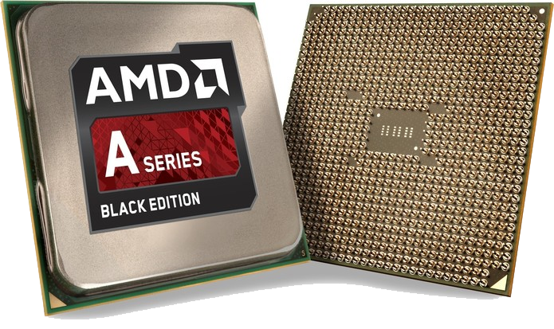
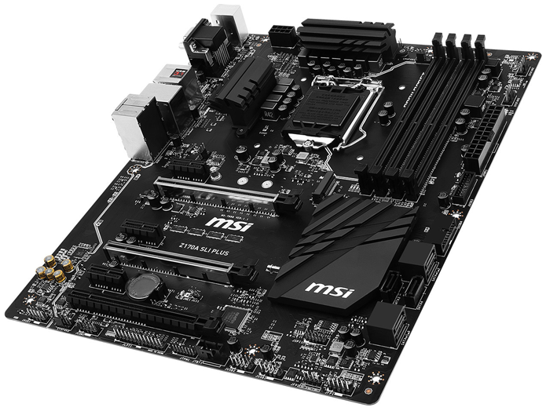
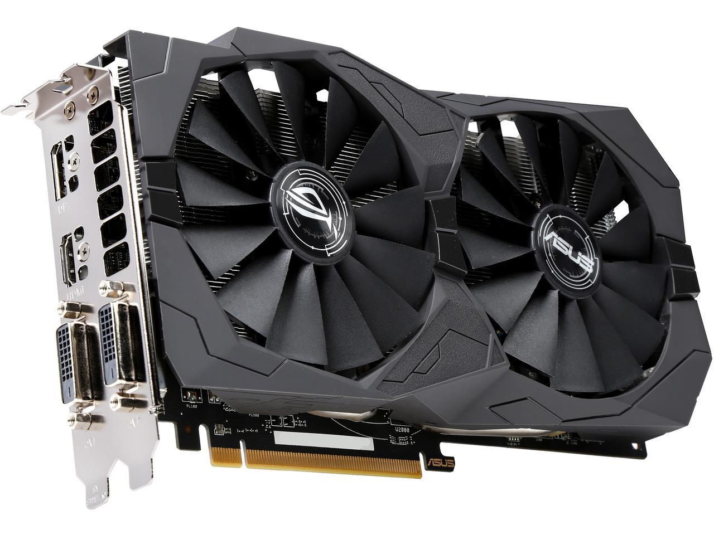
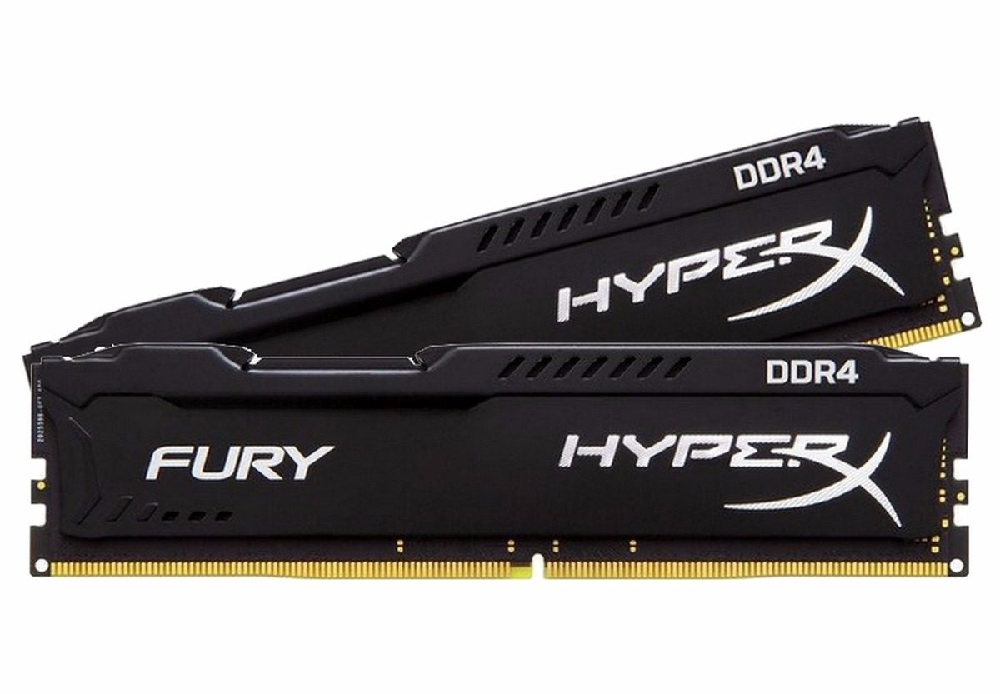
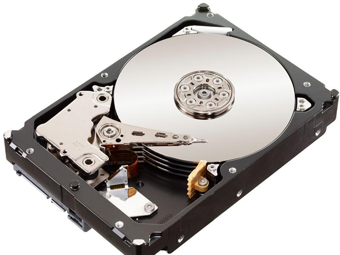
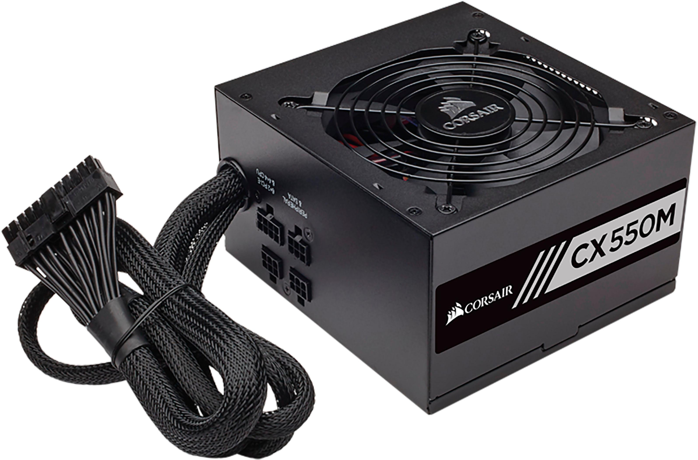
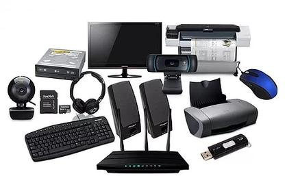

Hardware é a parte física do computador, ou seja, peças e equipamentos que o fazem funcionar. O termo também se refere ao conjunto de equipamentos acoplados em produtos que necessitam de gerenciamento computacional. Temos como principais hardwares de um pc o processador, a placa-mãe, a placa de vídeo, Memória RAM, HD, fonte de alimentação e seus periféricos.
Os processadores (ou CPU, de Central Processing Unit - Unidade Central de Processamento) são chips responsáveis pela execução de cálculos, decisões lógicas e instruções que resultam em todas as tarefas que um computador pode fazer. Por este motivo, são também referenciados como "cérebros" destas máquinas. Todo processador possui um nível de desempenho, que é determinado pelo seu clock. O clock é o número de ações (ou "pulsos de clock") que o processador consegue executar por segundo. Um computador que fizesse uma ação por segundo teria clock de um hertz (1 Hz). Mas os processadores atuais têm clocks de cerca de 2 GHz. Isso significa que eles são capazes de realizar cerca de dois bilhões de pulsos de clock por segundo. Quanto maior o clock de um processador, maior será a velocidade para executar as tarefas.
A placa mãe é a parte do computador responsável por conectar e interligar todos os componentes do computador, ou seja, processador com memória RAM, disco rígido, placa de vídeo, entre outros. Além de permitir o tráfego de informação, a placa também alimenta alguns periféricos com a energia elétrica que recebe da fonte de alimentação.
As placas de vídeo são itens responsáveis pela geração das imagens que são exibidas na tela do computador. A GPU (Graphics Processing Unit - Unidade de Processamento Gráfico), também chamada de chip gráfico, é certamente o componente mais importante de uma placa de vídeo. Trata-se de um processador responsável pela execução de cálculos e rotinas que resultam nas imagens exibidas no monitor de vídeo do pc. As placas de vídeo são divididas entre onboard (integradas na placa-mãe e com menor poder gráfico) e off board(compradas a parte, com maior poder gráfico).
A Memória RAM (Random Access Memory - Memória de Acesso Aleatório) é o componente que armazena arquivos e processos de forma provisória, ou seja, somente quando o pc está ligado. A velocidade e o desempenho de um computador são amplamente atribuídos à quantidade de memória RAM no computador. Se um computador não tiver memória suficiente para executar o sistema operacional e os programas de software em uso, isso resultará em um desempenho mais lento. Quanto mais memória um computador tiver, mais informações e software ele poderá carregar e processar rapidamente.
O disco rígido ( ou HD, de Hard Disk) é o dispositivo de armazenamento de dados mais utilizado nos computadores. Esse tipo de equipamento guarda desde os seus arquivos pessoais até informações utilizadas exclusivamente pelo sistema operacional. O disco em si fica guardado dentro de uma espécie de caixa de metal. Essas caixas são seladas para evitar a entrada de material externo, pois até uma minúscula partícula de poeira pode danificar os discos. Isso significa que, se você abrir um HD em um ambiente despreparado e sem o uso dos equipamentos e das técnicas apropriadas, terá grandes chances de causar danos a ele.
A Fonte de alimentação é a peça vital para um pc, pois é ela que o fará ligar. A fonte converte corrente alternada (CA) em corrente contínua (CC) e a distribúi pela placa-mãe, fazendo com que os demais componentes funcionem.
Os periféricos são dispositivos que tem a função de auxiliar na comunicação do usuário com a máquina. A maioria destes dispositivos estão na periferia (em torno) do computador, por isso o nome. Existem dois tipos de periféricos: os de entrada (mouse, teclado, microfone, webcam, CD ROM, etc) e os de saída (monitor, impressora, caixas de som, fone, etc). 